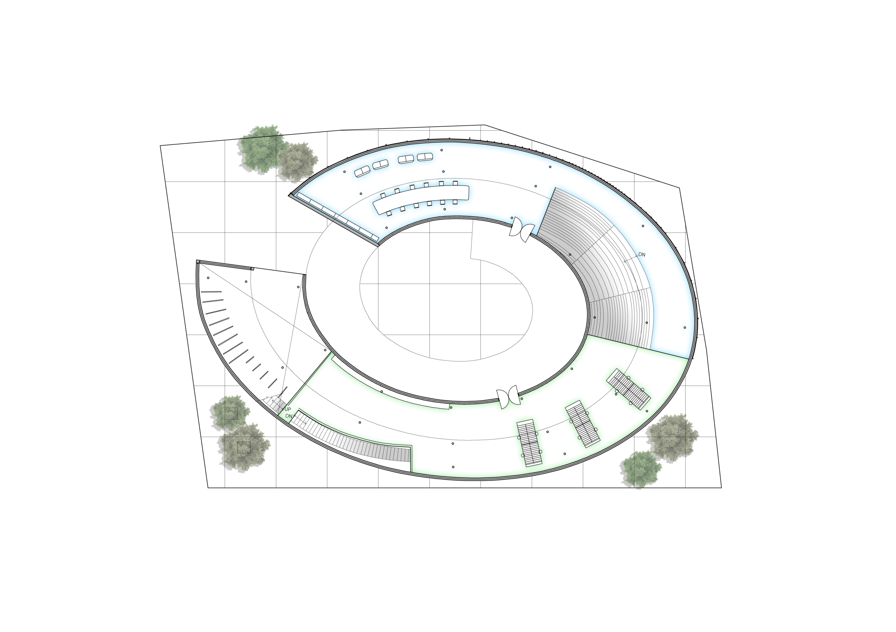

-1F 문화&교육 공간
천장 구조물로 모나미의 넓은 스펙트럼을 표현하여 모나르떼의 목적을 보여준다.
1F 체험공간
-1F 소개공간
모나미를 소개하는 공간, 기존의 방식이 아닌 더 다가가기 쉽게 모나미를 알려준다.
1F ~ 2F로 향하는 계단 위에서의 시선
체험공간과 사무공간이 램프를 통해 동선에 제약을 받지않고 자유롭게 연결된다.
2F 체험공간
건물 최상층의 끝 부분, 모나미의 색깔이 열린 공간을 통해 외부와 자연스럽게 섞이며 전망대의 역할도 함께 한다.
2nd Floor
1st Floor
Basement Floor